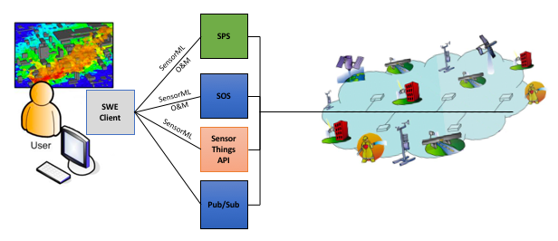

SOS - Main¶
Introduction¶
The Sensor Observation Service (SOS) defines a web service interface that allows retrieval of observations, sensor metadata and representations of the features from which the observations are taken. The service interface also allows publishing of new observations, as well as registration and removal of sensors.
- History
SOS version 2.0 was released in April 2012 SOS version 1.0 was released in October 2007
- Versions
2.0 is the current latest version
- Test Suite
- Test suites are available for:
- Implementations
Implementations can be found at the OGC database. here <http://www.opengeospatial.org/resource/products/byspec>
Usage¶
The goal of SOS is to provide access to observations from sensors and sensor systems in a standard way that is consistent for all sensor systems including remote, in-situ, fixed and mobile sensors. SOS achieves this goal by providing an Application Programming Interface (API) for managing deployed sensors and retrieving “observation” data collected by sensors. The observation data may have been collected by in-situ sensors (e.g. seismic monitoring) or dynamic sensors (e.g. satellite imaging). The following list presents examples of SOS usage:
The UK Department for Environment, Food & Rural Affairs (DEFRA) provides a machine readable access point for air pollution measurements served through its UK-AIR SOS
The US National Oceanic and Atmospheric Administration (NOAA) provides quality controlled ocean data and information through its Integrated Ocean Observing System (IOOS®) SOS
The Bureau of Meteorology of Australia publishes water monitoring data through an SOS provided by its Water Information Services program
The SOS acts as the intermediary between a client application and a physical sensor or an observation repository. In addition to accessing and SOS to retrieve observations, client applications can also access SOS to obtain metadata that describes the associated sensors, platforms, procedures and other characteristics associated with observations. By default, the data returned by an SOS is written as eXtensible Markup Language (XML) based on schema specified in standards such as the Observations and Measurements (O&M) and Sensor Model Language (SensorML).
An overview of SOS and its role in the Sensor Web Enablement (SWE) suite of standards is shown in the following figure (adapted from OGC document 10-073r1).
{kind=link}
Relation to other OGC Standards¶
Web Feature Service Interface Standard (WFS) : The WFS standard is designed to allow for serving feature types of any kind. Other than requiring the data to be serializable in Geography Markup Language (GML), WFS does not place any other significant constraints. In contrast, SOS formalized how specific entities and concepts that relate to sensor-collected data should be represented.
Observations & Measurements Schema (O&M) : The O&M standard models an XML Schema for encoding observations and measurements from a sensor, both archived and real-time. SOS uses O&M to represent the actual observations and measurements that are returned by queries made to SOS.
Sensor Planning Service (SPS) : The SPS standard defined a service interface for tasking acquisitions and observations. SPS provides a user-driven intermediary between a client application and a network of sensors.
Overview of SOS Operations¶
SOS specifies a number of different operations, of which the following are required to be supported by all servers:
- GetCapabilities
Returns a document that describes the functionality and resources offered by the SOS service that is provided by the server.
- DescribeSensor
Returns a description of the procedures or sensors associated with an SOS.
- GetObservation
Returns observation data that has been collected by the procedure or sensor.
The following optional operations may also be offered by an SOS:
- GetFeatureOfInterest
Returns a description of the features of interest for which the SOS offers observations.
- GetObservationById
Allows the client application to retrieve an observation by passing a pointer to that observation.
- InsertSensor
Registers a new sensor system in the SOS.
- DeleteSensor
Deletes a new sensor system from the SOS.
- InsertObservation
Allows client applications to insert new observations for a registered sensor system.
- InsertResultTemplate
Allows client applications to upload a template for result values such that result values that conform to the template can be inserted into the SOS using subsequent calls of the InsertResult operation.
- InsertResult
Allows a client application to insert new observations for a sensor system by inserting only the results of the observations and reusing other metadata provided by a template.
- GetResultTemplate
Returns a result template that describes the exact structure used by a specific procedure or sensor to generate a new observation result.
- GetResult
Allows retrieving just the result values of observations without the entire metadata of the observation.
Example¶
This SOS Demo server publishes observations from air quality sensors.
A web-based SOS client application is available at the following location for querying the SOS.
Client Usage¶
A client needs to know the location of the SOS service to be able to interact with the server. The location is usually called the ‘end point’ of the service. The end point is typically the URI of the GetCapabilities request, however the capabilities document returned by the service may present alternative URI end points for other operations.
The observation offerings are then identified from the GetCapabilities response and a GetObservation request created to retrieve data from the identified observation offerings. An example GetObservation request that can be used to retrieve data from the offerings is shown below.
http://sensorweb.demo.52north.org/52n-sos-webapp/service?
service=SOS&
version=2.0.0&
request=GetObservation&
offering=http%3A%2F%2Fwww.52north.org%2Ftest%2Foffering%2F1
A link to the GetObservation request
The GetObservation request queries the server with a set of parameters describing the observations to return. The observations returned can be rendered by a desktop Geographic Information System (GIS) or web application. Alternatively, the observations can be forwarded to an OGC WPS for further processing.
Other Tutorials¶
There are other tutorial resources available from across the Web. Examples are listed below: